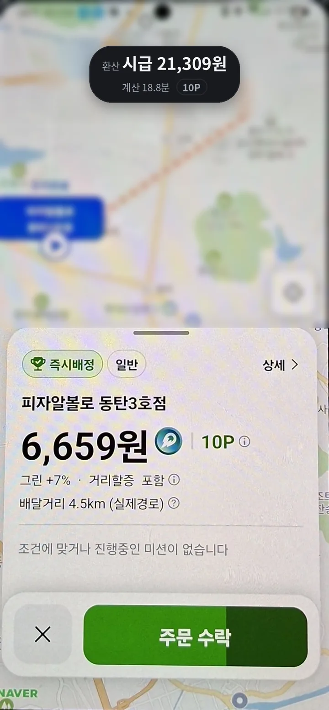
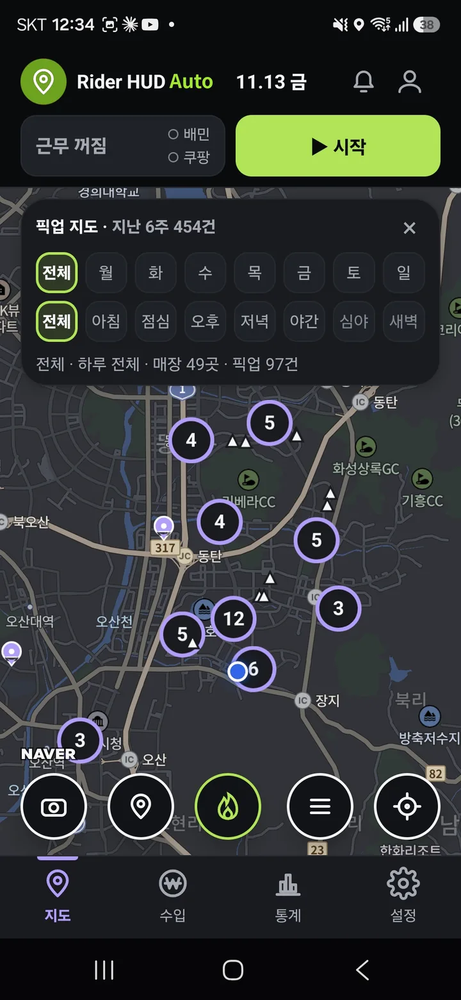

플랫폼의 데이터가 아닌,나의 데이터로 일하는 시대.
계산은 HUD가, 판단은 라이더가.
라이더HUD Auto는 플랫폼의 배차를 대신하는 앱이 아닙니다. 플랫폼으로 일하는 라이더가 자기 노동을 이해하고 스스로 판단하도록 돕는 배달 비서입니다. 출발점은 기술이 아니라, 배달 현장에서 직접 겪은 질문이었습니다.
플랫폼은 모든 것을 기록합니다.라이더에게는 무엇이 남나요?
플랫폼은 배차, 이동 거리, 걸린 시간, 배달료, 운행 패턴을 모아 분석하고, 그 데이터로 배차와 운영을 다듬습니다. 그런데 정작 라이더는 이런 질문에 답할 데이터가 없습니다.
- 오늘 몇 시간을 일했나?
- 실제로 얼마나 달렸나?
- 한 건에 시간이 얼마나 들었나?
- 받은 배달료는 일한 시간에 비해 괜찮았나?
- 배달 뒤 어디서 기다리는 게 나았나?
라이더는 플랫폼이 보여 주는 만큼의 정보로 일합니다. 라이더HUD는 이 데이터의 기울기를 조금이라도 바로잡고, 라이더도 자기 일을 데이터로 이해할 수 있어야 한다는 생각에서 시작했습니다.
나의 데이터를 위한 네 가지
보여 주되, 판단을 강요하지 않는다
어떤 콜을 받으라거나 거르라고 말하지 않습니다. 배달료, 거리, 걸릴 시간, 시급처럼 판단에 필요한 것을 보여 주고, 결정은 라이더에게 맡깁니다.
플랫폼이 주지 않는 기록을 쌓는다
위치 기록으로 실제 달린 거리와 시간, 콜을 기다린 시간, 내가 픽업한 곳을 모읍니다. 배달할수록 쌓이고, 그 기록은 내 폰과 내 손에 남습니다.
복잡한 분석보다 현장에서 바로
달리는 중에는 화면을 들여다볼 틈이 없습니다. 최소한의 조작으로, 필요하면 소리로 알려 주는 쪽을 고릅니다. 기술 자랑보다 길 위에서 흔들림 없이 도는 것이 먼저입니다.
라이더의 노동을 광고 상품으로 만들지 않는다
배달하는 화면에 광고를 띄우지 않습니다. 대신 서비스 값에 맞는 이용료를 받습니다. 무료만이 라이더를 위한 길은 아닙니다. 오래 고치고 지킬 수 있는 구조도 중요합니다.
웹앱에서 Auto로,화면을 계속 보지 않아도 되게
예전 라이더HUD 웹앱은 브라우저 안에서 돌았습니다. 배달 앱으로 넘어가거나 화면을 끄면 음성 안내가 멈추고 기록이 빠졌습니다. 현장에서 쓰는 도구라면 풀어야 할 한계였습니다.
그래서 안드로이드 앱으로 다시 만든 것이 라이더HUD Auto입니다. 앱을 계속 들여다보거나 만지지 않아도, 배달 앱 위에서 계산하고 알려 주고 기록합니다.


라이더의 판단권과개인정보를 지킵니다
라이더HUD는 배달 앱을 대신 조작하는 프로그램이 아닙니다.
- 자동 수락 · 자동 거절을 하지 않습니다.
- 배달 앱의 단추를 대신 누르지 않습니다.
- 플랫폼 계정과 로그인 정보를 묻지 않습니다.
- 고객 주소 · 연락처 · 요청사항을 읽지도 보내지도 않습니다.
- 공동현관 메모는 라이더가 직접 쓰고, 내 폰 안에만 암호화해 둡니다. 캡처 · 공유가 막혀 있고 서버로 가지 않습니다.
라이더의 판단을 대신하는 순간, 돕는 도구는 부리는 도구가 됩니다. 라이더HUD는 그 선을 넘지 않습니다.
라이더가 일하지 않으면부담도 줄어드는 구조
배달 중에 광고로 화면을 가리거나, 광고 수익을 위해 쓰는 경험을 해치고 싶지 않습니다. 그렇다고 무조건 무료로 하겠다는 뜻은 아닙니다. 계속 고치고 서버를 돌리려면 정당한 수익이 필요합니다.
그래서 정산 확인된 건마다 20원을 받습니다. 많이 타는 달에는 월 정액을 고를 수 있습니다. 이용료는 라이더의 노동에서 생긴 값을 나누는 것이지, 라이더의 데이터를 팔아 얻는 광고 수익이 아닙니다. 요금 보기 ›
배달 기록이나의 노동 이력이 되도록
| 지금까지의 배달 | 라이더HUD와 함께 |
|---|---|
| 주는 콜을 받는다 | 콜 값을 따져 본다 |
| 오늘 수입만 본다 | 시급까지 본다 |
| 감으로 기다린다 | 기록으로 고른다 |
| 지난 배달은 잊는다 | 건마다 쌓인다 |
| 플랫폼의 데이터 | 나의 데이터 |
많이 타는 것만으로는 더 나은 라이더가 되지 않습니다. 내가 어떻게 일하고 있는지 알고, 무엇이 남고 무엇이 새는지 판단할 수 있어야 합니다. 라이더HUD는 그 판단에 쓰는 도구가 되려 합니다.
기억하지 말고기록하세요.
HUD Labs는 현장에서 직접 일하며 문제를 찾고, 기술로 답을 만드는 팀입니다. 라이더HUD Auto도 책상에서 상상한 서비스가 아니라 직접 배달하며 느낀 불편에서 나왔습니다. 우리가 만들고 싶은 것은 라이더를 더 많이 일하게 하는 앱이 아니라, 자기 일을 더 잘 이해하고 일하는 방식을 스스로 고르게 돕는 앱입니다.
- 플랫폼이 주는 정보에만 기대지 않고 나의 기록을 쌓는다
- 감과 경험을 기록과 분석으로 키운다
- 기술은 라이더의 판단을 돕되 대신하지 않는다
- 광고가 아닌 서비스의 값으로 오래 간다